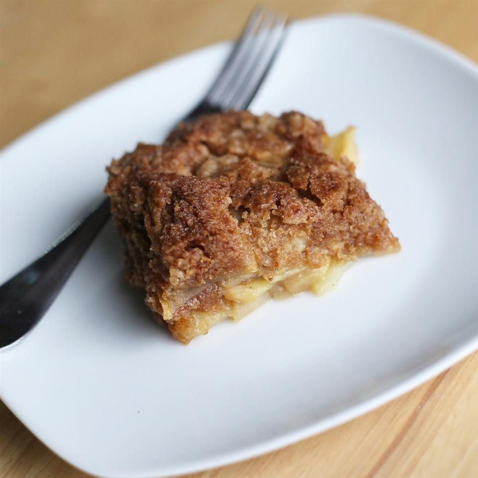

Apple Cobbler Crumble

This super-easy cobbler is great for unexpected company or spur-of-the-moment cravings. The juice from the fruit cooks out to produce enough moisture to make this cobbler delicious. You can also use fresh peaches instead of apples.
Ingredients
- 1 cup self-rising flour
- 1 cup white sugar
- ½ cup butter, softened
- ½ teaspoon ground cinnamon
- 4 Granny Smith apples, cored and sliced
Steps
- Preheat oven to 350 degrees F (175 degrees C). Grease a 9x9-inch baking dish.
- Mix flour, sugar, butter, and cinnamon together in a bowl using a pastry blender or fork until crumbly; reserve 3/4 cup flour mixture to use as topping.
- Sprinkle a light layer of flour mix into the prepared baking dish; top with a layer of apples. Continue alternating layers of flour mixture with apples and ending with apples. Sprinkle top apple layer with the reserved 3/4 cup flour mixture.
- Bake in the preheated oven until apples are tender and topping is lightly browned, 30 to 35 minutes. Allow cobbler to cool for 10 minutes before serving.